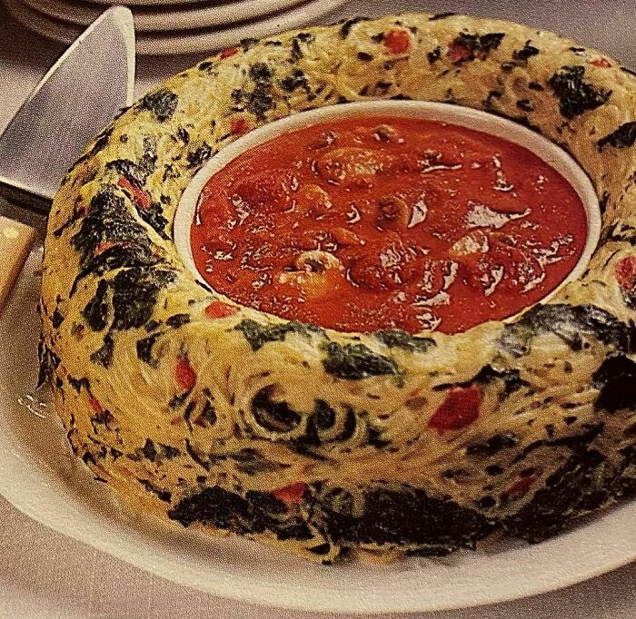

Spaghetti Ring Florentine

A delightful and visually appealing dish featuring a savory blend of spaghetti, spinach, cheese, and eggs, molded into a ring shape and baked to perfection.
Perfect for a unique and tasty addition to any meal.
Ingredients
- 8 ounces spaghetti, cooked and drained
- 2 tablespoons butter or margarine
- 1/4 cup all-purpose flour
- 1 teaspoon salt
- 1/4 teaspoon pepper
- 2 cups milk
- 1/2 cup grated Parmesan cheese
- 2 eggs, beaten
- 1 package (10 ounces) frozen chopped spinach, thawed and well drained
- 1/2 cup shredded mozzarella cheese
Steps
- Cook and drain the spaghetti according to package directions.
- In a medium saucepan, melt butter or margarine over medium heat. Stir in flour, salt, and pepper until well blended.
- Gradually add milk, cooking and stirring constantly until the mixture thickens and comes to a boil. Remove from heat.
- Stir in Parmesan cheese until melted and smooth.
- In a large bowl, combine the cooked spaghetti and beaten eggs.
- Add the cheese sauce to the spaghetti mixture and mix well.
- Fold in the well-drained spinach.
- Pour the mixture into a greased 9-inch ring mold or Bundt pan.
- Sprinkle shredded mozzarella cheese evenly on top.
- Bake at 350°F (175°C) for 30 minutes or until the top is lightly browned and the mixture is set.
- Allow to cool for a few minutes, then carefully unmold onto a serving platter.
Let's go home...